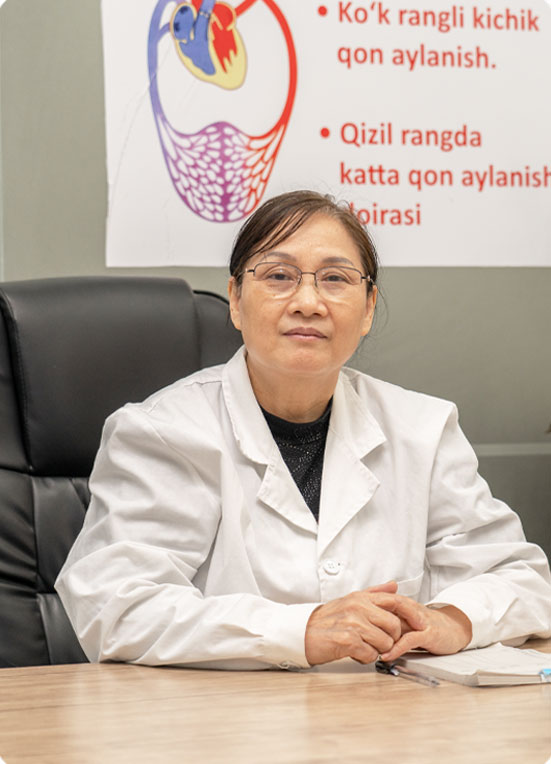

Наши врачи

Liang Huilan (Лианг Хуи Лан)
62 года, окончила университет китайской народной медицины в Гуанси. Специальность: терапевт с профессиональным опытом, стаж работы 40 лет. Лечит болезни с помощью китайской народной медицины, используя иглоукалывание и лечебные травы, снимает болевые симптомы в области шеи, спины, поясницы и ног. А также, постинсультные осложнения.
Запись на консультацию
Здравствуйте!
Чем я могу вам помочь?